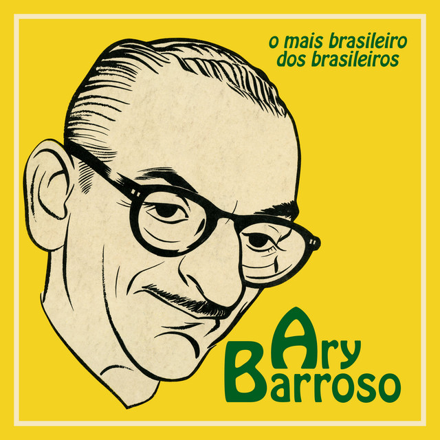
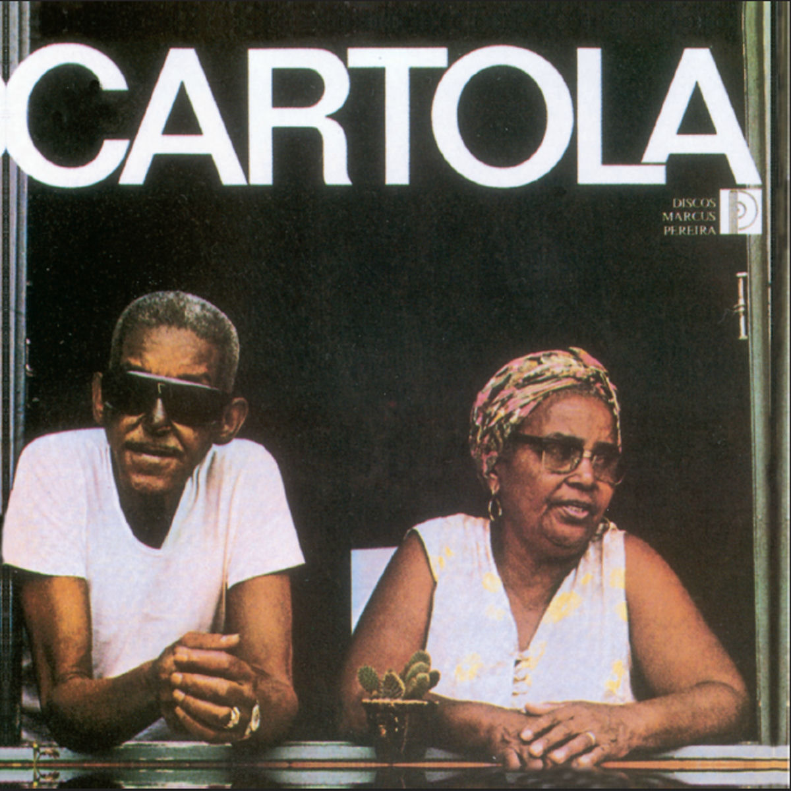
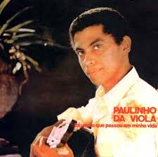
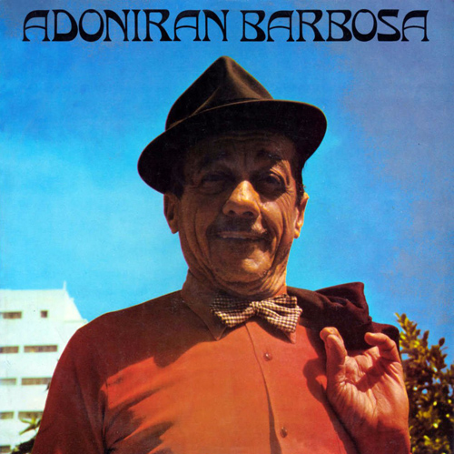
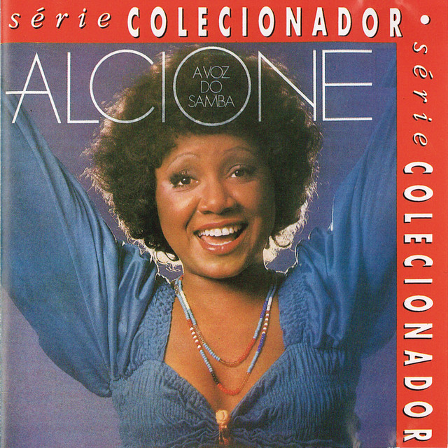

Clique na imagem para ler a curiosidade

Ary Barroso escreveu essa música em uma noite de tempestade em 1939, impedido de sair de casa pela chuva. Ela se tornou tão famosa mundialmente que Walt Disney a usou no filme Alô, Amigos para apresentar o personagem Zé Carioca ao mundo.

A música nasceu de um momento real entre Cartola e sua esposa, Dona Zica. Ao ver as rosas desabrocharem no jardim, Zica perguntou por que elas estavam tão lindas, e Cartola respondeu: "As rosas não falam, elas simplesmente exalam o perfume que têm".

Em 1970 Paulinho escreveu essa música para provar seu amor pela Portela. Ele tinha feito uma música para a Mangueira antes e os torcedores da sua escola ficaram com ciúmes! Para se redimir, ele criou essa obra-prima que compara o desfile da Portela a um rio passando por sua vida.

Adoniran Barbosa, Embora tenha imortalizado o bairro do Jaçanã, confessou mais tarde que nunca morou lá e nem precisava pegar aquele trem. Ele escolheu o bairro apenas porque a palavra "Jaçanã" rimava perfeitamente com "amanhã"!

Antes de ser o grande sucesso na voz da Alcione, a música foi rejeitada por várias gravadoras que achavam a letra "triste" ou "muito séria". Alcione insistiu, gravou e transformou a canção no maior hino de resistência da história do samba.